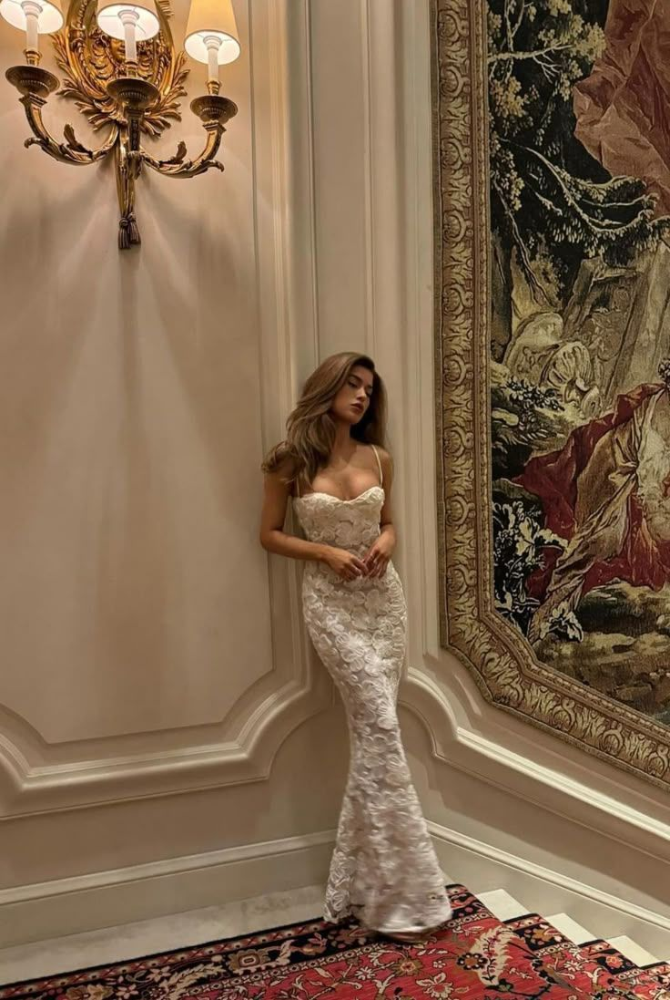
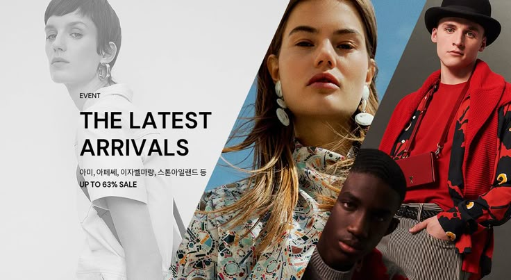
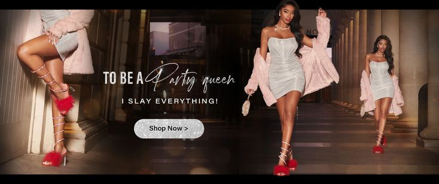
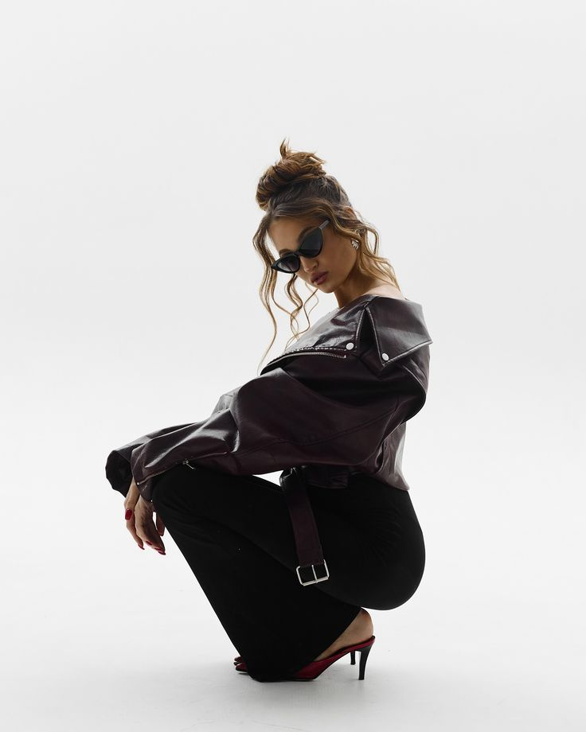

premier
Model
Woman/Man
Agency/Blog/Information
Photography
and Films
01
Explore

All
A
B
C
D
E
F
G
H
I
J
K
L
M
N
O
P
Q
R
S
T
U
V
W
X
Y
Z
Hannah Molter
features in a
fashion story by
the lake for
vogue new shot
Such exposure to the fashion and
beauty industries enabled her
passion for branding
and
creativity to transition from one
side of the
camera to the other
VOGUE / SHOT
Maison ARTC:memories and culture,
the base of
futuristic fashion
awareness.Tilila oulhaj look


UPDATES

Men
Fashion
Khadim & Tom Ford
25th march 2025

Women
Fashion
Arena Homme
3rd february 2025

Special
View
Jing for Wonderland
14th january 2025
 · Instagram 照片和视频.jpeg)
Models
Talk
Glass x Belle
08th january 2025
movie shot
Londan based Sadie Mitchell has
a distinct
aesthetic within her
Photography & moving image
sadie's calm nature and eagerness to create while still maintaining
a high level of
has seen her slide into fashion industry - Photographing
campigin,look books,editorials,potraits,short films and TV commercials.

"Body" and "No
Lie"-90 inspired
R&B sound
that is
drawing a new
comparision to
LISA(BLACK
PINK)
There aren't many 22 year old
with the interospection of
icelandinc artist Glowie-real
name Sara petrutrte -but
then again,She's always been
one for donig her own thing.
premier model 2025
premier model 2025
premier model 2025
premier model 2025
premier model 2025
blog
B
Jack Thompson features in a story
crossing bridges for ID
Magazine shot
by Maxwell Tomlinson,styled by Louise
Prier Tisdall.

B
Jack Thompson features in a story
crossing bridges for ID
Magazine shot
by Maxwell Tomlinson,styled by Louise
Prier Tisdall.


.jpeg)
.jpeg)

.jpeg)